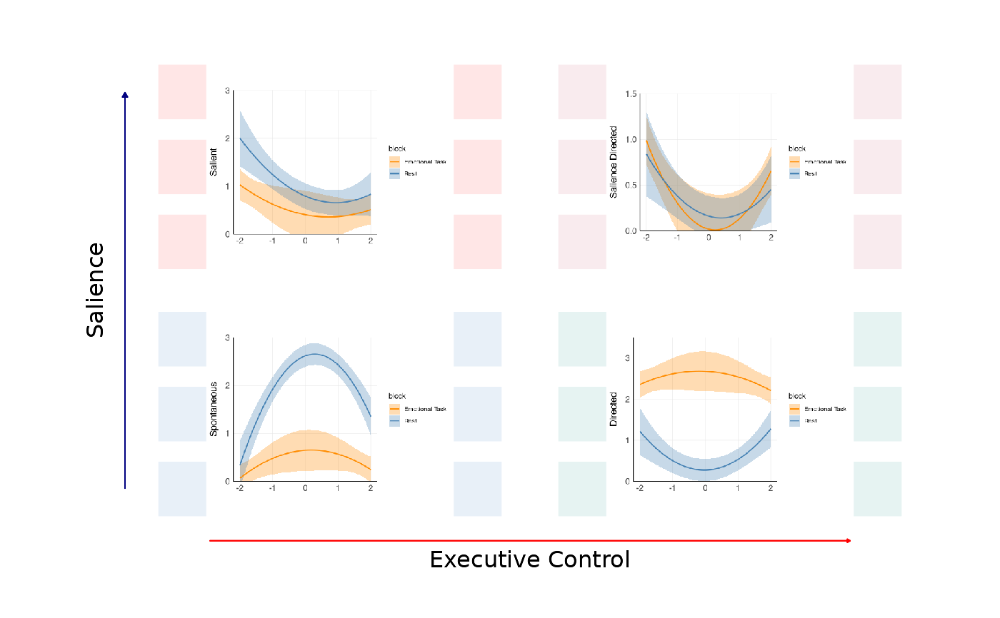
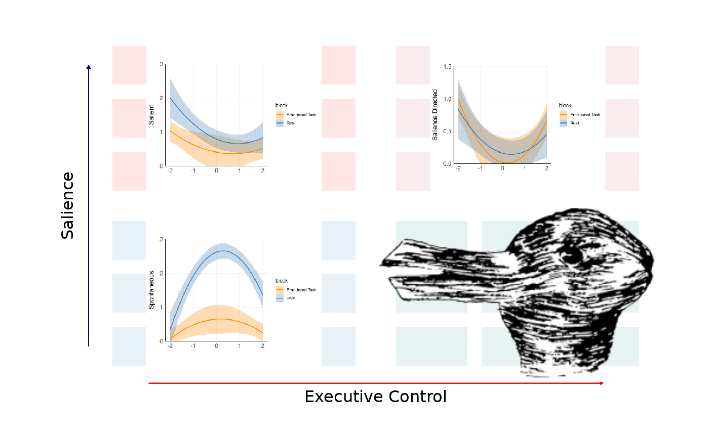

Creates a 2x2 plot grid overlayed on top of a ThinkingGrid background.
Source:R/plot_2x2.R
thinkgrid_quadrant_plot.RdCreates a 2x2 quadrant plot with four ggplot objects.
Usage
thinkgrid_quadrant_plot(
p_sticky,
p_salience,
p_free,
p_directed,
inner_theme = NULL,
arrowwidth = 1,
xlab = "Executive Control",
ylab = "Salience"
)Arguments
- p_sticky
(ggplot or rastergrob) A ggplot object for the "Sticky" quadrant.
- p_salience
(ggplot or rastergrob) A ggplot object for the "Salience" quadrant.
- p_free
(ggplot or rastergrob) A ggplot object for the "Free" quadrant.
- p_directed
(ggplot or rastergrob) A ggplot object for the "Directed" quadrant.
- inner_theme
(theme, optional) A theme for the inner subplots. See
default_inner_themefor more details.- arrowwidth
(integer, optional) Controls the thickness of the axis arrows.
- xlab
(character, optional) Label for the x-axis.
- ylab
(character, optional) Label for the y-axis.
Value
A ggplot object (created via cowplot) which consists of the thinking grid background and the inlayed 2x2 subplots (or images) corresponding to the respective quadrant.
Examples
# This is a list of four plots generated by some regression. Their exact nature is not
# important aside from the fact that they are ggplot objects.
plots <- ThinkingGrid:::create_test_2x2_plots()
p1 <- plots[[1]]
p2 <- plots[[2]]
p3 <- plots[[3]]
p4 <- plots[[4]]
# This is the usual syntax.
thinkgrid_quadrant_plot(p1, p2, p3, p4)

# However, it is possible to use images as the subplots. IDEALLY, one uses an image
# type without backgrounds such as a PNG.
img_path <- system.file("extdata", "rabbiduck.png", package = "ThinkingGrid")
rabbi <- png::readPNG(img_path)
rabbigrob <- grid::rasterGrob(rabbi) # Note you must raster the image!
# Create sample plots for demonstration
plots <- ThinkingGrid:::create_test_2x2_plots()
thinkgrid_quadrant_plot(p1, p2, p3, rabbigrob)
